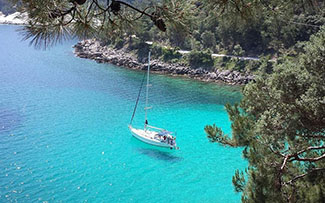
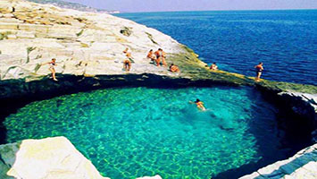

OSNOVNI PODACI O TASOSU
Grčko ostrvo Tasos nalazi se u istočnom delu pokrajine Makedonija, tj. severoistočnom delu Grčke. Ostrvo predstavlja najsevernije ostrvo grčkog arhipelaga u Egeju. Gledano geografski ostrvo je deo teritorije koja se naziva Trakija, Tasos se prostire na površini od oko 390 km2, što ga čini devetim po veličini ostrvom Grčke. Ostrvo zauzima najistočniji i najjužniji deo prefekture Kavala. Prevoz izmedju Kavale i Tasosa je organizovan putem trajektnih linija.
Najviši vrh, na ovome inače veoma brdovitom ostrvu, ima mermerni masiv Ipsarion od 1.127 m. Teritorijalno glavnom ostrvu pripadaju i tri veoma mala ostrva: Tasopulo na severu, na istoku Kinira, a na jugu Panagia, samo 0,4 km2 je ukupna površina sva tri ostrvca.
Prema popisu iz 2005. godine ukupan broj stalnih stanovnika ostrva je oko 16.000. Limenas je dans glavni grad ostrvu, nekada su ga zvali i Tasos, iako je antički grad Tasos na drugoj strani ostrva, dok se prvobitno glavno mesto na ostrvu zvalo Telohos, koji je smešten u samoj unutrašnjosti ostrva.
Za sve one koji žele miran letnji odmor, Tasos predstavlja idealnu destinaciju, da na samoj plaži nadjete smeštaj, da posao i probleme prepustite zaboravu, te da se opušteno izležavate i kupate.
Vodeni parkovi su na Tasosu nepoznati, nema ni akvarijuma, marina sa luksuznim jahtama niti kvartova sa luksuznim hotelima, takodje tržni centri i mega-marketi, kineski i italijanski restorani, McDonalds, provod noću i slično. Na Tasosu se možete oduševiti sitnicama, nekom divljom uvalicom, lepom plažom, čistom vodom, lepim pogledom, ljubazan ostrvljanin, miris borovine, hiljadugodišnja maslina, zalazak sunca – znači priroda.
Da bi bolje upoznali Tasos neophodan vam je auto ili skuter i onda možete krenuti u avanturu istraživanja ostrva. Krug oko ostrva iznosi oko 95 km, tako da ga za nešto više od sat vremena možete celoga obići.
GEOGRAFSKI PODACI
Tasos je najsevernije ostrvo Egejskog arhipelaga, smešten u neposrednoj blizini istočne obale grčke oblasti Makedonija, udaljenost od luke Keramoti iznosi 6 nautičkih milja (oko 11 km), a od grada Kavale 12 nautičkih milja (oko 22 km), oko 50 km (27 nautičkih milja) od Svete Gore (Atosa).
Tasos se prostire na površini od oko 390 km², pa je medju grčkim ostrvima deveto po veličini. Gledajući od zapada prema istoku, široko je 22 kilometra, a u pravcu sever – jug, dužina mu je 26 kilometara. Oblik ostrvaje nepravilan krug, bez dubokih zaliva i izrazitih poluostrva. Prema geografskom položaju ostrvo je locirano na teritoriji Trakije u prefekturi Kavala. Dužina obale Tasosa, merena u krug, iznosi 93 km, Dobrim putem uglavnom uz samo more ostrvo se može obići za nepunih dva sata vožnje.
Glavnom ostrvu pripadaju još tri veoma mala ostrva: sa severne strane preko puta glavnog grada Limenasa nalazi se ostrvo Tasopulo, Kinira (na istočnoj strani, preko puta istoimenog antičkog gradića i čuvene Rajske plaže) i na kraju Panagija na južnoj strani ostrva u blizini mesta Astris.
Planinski venac Ipsarion pruža se sredinom ostrva, koji ima najviši vrh Ipsario čija je visina 1.127 metara n/m. Drugi po visini vrh je Profitis Ilias koji je visok 1.108 metara n/m. Tasos je bogat rekama, izvorima i potocima. U blizini sela Maries nalazi se predivno jezero i mnoštvo manjih slapova i kaskada, a pored sela Kastro nalazi se predivan vodopad. Zbog ovog prirodnog bogatstva, na ostrvu nikad nema restrikcija vode, koja se bez straha može piti na svakom mestu.
UKRATKO O OBALI TASOSA
Duž obale Tasosa postoje brojni rtovi, kao isturene, uzvišene tačke koje zalaze duboko u more (Gramvuza, Diaporos, Pakis, Salonikos, Kefalas Baburas i drugi). To je i razlog zašto je Tasos poznat po velikom broju dostupnih vidikovaca na koje ćete naići pored puta krećući se u krug po ostrvu vrlo često vidikovci su uredjeni kao asfaltna proširenja na putu, sa tipičnom zidanom kružnom kućicom, sa klupama za sedenje i stolom u njoj kao i kante za otpatke. Sa ovih tačaka pruža se pogled koji oduzima dah i koji prosto mami da bude ovekovečen objektivom fotoaparata ili kamere ili barem zabeležen duboko u našem sećanju..
Obala Tasosa, gotovo celom dužinom, je izuzetno pitoma i pristupačna. Iz tog razloga na ostrvu postoji blizu 70 imenovanih, potpuno ili delimično uredjenih plaža te još mnoštvo malih, poludivljih ili divljih uvala. Zastupljeni su svi tipovi plaža, od onih sa skroz sitnim, puderastim peskom zlatnožute, bledo sive pa čak i bele boje, preko onih na kojima je sitno zrnast šljunak i onih sa šljunkom koji je krupniji, oblucima ili kamenčićima od mermera, pa sve do onih sa grubim i finijim stenama.
Vrlo često su plaže bez hlada od drveća, mada ima i onih sa debelom hladovinom, specijalno na severnoj strani ostrva. tu je i nekolicina plaža na kojima se redovno javljaju talasi i koje su naročito omiljene kod mladje populacije. Svako će za sebe pronaći jednu ili više plaža koja mu odgovara i bukvalno svakog dana svog letovanja će moći da uživa na potpuno različitim plažama, s obzirom da pri prvoj poseti ostrvu neće stići da isproba ni najmanji deo njih, uz to neće ni otkriti sva blaga Tasosa, te će morati da se vrati barem još nekoliko puta.
Najčuvenije plaže sa imenima, idući od Limenasa zapadnom stranom, te dalje ka jugu, pa nakon toga u krug istočnom stranom ponovo u Limenas, nalaze se: Limanaki, Vurnelis, Tarzanas, Nisteri, Glifada, Papalimani, Glikadi, Glifoneri, Pahis, Rahoni, Skala Prinos/Dasilio, Skala Sotiros, Skala Kaliraki, Platanas, gradska plažica u Skali Maries, Atspas (Acpas ili Šećerna plaža), Tripiti, Stelakis, gradska plaža u Limenariji, Metalia, Pefkari, Potos, San Antonio, Roso Gremos, Notos, Psiliamos, Astris, Livadi, Thimonia, Kekes, Aliki, Paradise, Skala Potamia, Golden beach, Vati, Saliara ili Mermerna plaža, Makriamos i Karnadjo.
Sve plaže imaju izuzetno čisto more, jasno i pregledno do samog dna. Kao dokaz ispunjavanja strogih ekoloških i drugih standarda, čak 4 plaže su dobile Plavu zastavu, i to: Golden beach, Pefkari, Makriamos i gradska plaža u Limenasu, pored stare luke (tzv. Limanaki).
 KLIMA NA TASOSU
Zahvaljujući položaju koji je severniji, klima na Tasosu je zdrava i uravnotežena, temperature koje podsećaju na tropske kao na grčkim ostrvima na jugu nezabeležene su. Isto tako, Tasos je zaštićen od jakih vetrova, koji su istaknut problem grčkog arhipelaga. Ako se vetar i pojavi, u pitanju su prijatni, spori, osvežavajući vetrovi. Vazduh u principu nikada nije pretrpan solju i vlagom i retka je pojava da tokom toplih letnjih večeri ne može da se dišei da sve što se ne unese unutra u toku noći do jutra bude mokro
Prosečne temperature vazduha u toku leta su u intervalu od 24,5°C u junu, 27°C u julu, 26,5°C u avgustu i 25°C u septembru. U delu dana kada je najtoplije tokom udarnih letnjih meseci skala na termometru se kreće izmedju 30. i 35. podeoka. Srednja temperatura mora u letnjim mesecima je oko 25°C što prilikom plivanja predstavlja istinsko uživanje.
Srednja vrednost temperature vazduha u zimskom periodu je izmedju 8 i 10°C iznad nule. A, kako sunce svakog dana sija barem četiri sata tokom zimskih meseci, klima ostaje prijatna i blaga.. Snežne padavine su retke, sem na vrhovima planinskog masiva,, ali su svakako zabeležene.
Kiša je u letnjem periodu retka pojava. Dogodi se po koji jak pljusak, uglavnom na severu ostrva iznad planinskog masiva, koji u tom obliku nikada ne stigne do južnog dela već se pretvori u laganu kišu ili čak potpuno prestane. Jeseni i proleća su na Tasosu izuzetno dobri za aktivnosti na otvorenom, jer su temperature izrazito prijatne, a kišni periodi su svedeni na minimum.
Mnogi misle da je Tasos najlepši u kasno proleće i rano leto, zbog idealnih temperatura, bujne vegetacije i hiljada boja koje krase njegov krajolik.
ISTORIJA TASOSA
Istorija Tasosa je veoma bogata i burna. Razni osvajači su se veoma često menjali u vladanju ovim ostrvom svi oni su za sobom ostavili mnoštvo tragova svojih kultura.
Svedočanstva o tome da je Tasos bio naseljen još u davnoj praistoriji, nalaze se u obliku mnoštva arheoloških ostataka kao što su neolitski alati i glinena keramika. Najveći deo istoričara se slaže u tome da su prvi stanovnici ostrva bila tračka plemena. Nasuprot njima druga grupa istoričara veruje da su prvi stanovnici Tasosa ipak bili Grci. Arheolozi su pronašli brojne tragove koji svedoče o slavljenju grčkog boga Herakla kao zaštitnika ostrva.
Prvo spominjanje Tasosa susrećemo kod istoričara Herodota, i on isto smatra da su Tasos prvo nastanjivala tračka plemena, koje su Feničani pod vodjstvom Tasosa proterali negde u 16. ili 17. veku pre nove ere. Ime Tasos, po mišljenju Herodota, ostrvo je dobilo po sinu Feničanskog kralja Agenora. Bog Zevs je prema grčkojmitologiji oteo Evropu, sestru Tasosovu, koju je on došao da traži na ovom ostrvu.
Za razliku od Herodotovog mišljenja, ima i mišljenja da su tračka plemena napala Tasos tek negde u 7. veku pre nove ere, kada su Grci koji su bili nastanjeni tamo pozvali čuvene jonske ratnike sa ostrva Paros da im pomognu u odbrani, a njih su predvodili kralj Telesikles sa sinom, čuvenim pesnikom Arhilokusom. Oni su postupno uspeli da proteraju Tračane i na Tasosu uspostave kontrolu.
Najpoznatija znamenitost na Tasosu su ostaci antičke agore, koja se nalazi pored arheološkog muzeja, tu su ostaci helenističkih gradjevina kao i ostaci teatra. Ostaci djenoveškog kaštela se nalaze na brdu iznad mesta, kao i temelji antičke akropole medju ostacima hramova Apolona i Atine. Tasos ima arheološki muzej sa eksponatima pronadjenih po celom ostrvu od 7. veka p.n.e. do 7. veka n.e..
Stanovnici Tasosa se danas uglavnom bave turizmom, a na ostrvu ih živi oko 16.000, po podacima sa popisa iz 2005. godine, broj stanovnika je iz godine u godinu u stalnom rastu. Grci nisu jedini trajno naseljeni stanovnici Tasosa, u velikom broju ima i Engleza, Bugara, Nemaca i Albanaca. Osim turizmom, stanovništvo se pretežno bavi ribolovom, stočarstvom, uzgojem i preradom maslina, voća i žitarica, proizvodnjom meda, vina i eksploatacijom čuvenog belog mermera.
PUTOVANJE DO TASOSA AVIONOM
Bez obzira što u blizini Kavale, tačnije na 40 km od Kavale u mestu Hrisupoli, je aerodrom, iz Srbije nije uspostavljena direktna avio linija. Avionom je iz Beograda moguće stići samo do Soluna ili Atine. Od Soluna do Kavale postoji mogućnost prevoza autobusom. Sa aerodroma do glavne autobuske stanice u Solunu putnike prevozi redovna autobuska linija broj 78 koja u letnjim mesecima ide na svakih 15 do 30 minuta, dok su u zimskom periodu intervali polazaka na svakih 30 – 45 minuta i koja za 50 minuta prelazi navedenu relaciju. Iz Atine postoji mogućnost presedanja na avion za Kavalu, iako je ova varijanta svakako vrlo nepovoljna u svakom smislu zato što košta više i traje duže
Kada iz pravca Atine odnosno nekog drugog evropskog grada pristignete na aerodrom u Kavali preporuka je da se prevezete do luke u Keramotiju, koja je bliža aerodromu nego luka u Kavali, te da odatle predjete trajektom na Tasos, odnosno u grad Limenas. Od aerodroma do Keramotija se možete prevesti jedino taksijem. Kako od aerodroma do Keramotija ima desetak kilometara, ova vožnja ne bi trebalo da traje duže od desetak minuta i ne bi smela puno da košta.
Putovanje iz Keramotija trajektom na Tasos (u Limenas) traje oko 35 minuta. Cene za putničke automobile i osobe su u zavisnosti od prevoznika, kojih ima više. Kada putujete trajektom iz Kavale do 15 km udaljenog Limenasa, vožnja će onda trajati oko 90 minuta. Ako auto-putem dolazite iz pravca Soluna, razume se da, nema potrebe ni ulaziti u Kavalu nego nastaviti prema Xanti-ju a zatim skrenuti prema Keramotiju, kada se naidje na tablu. U Keramoti dolazite za ukupno 40 minuta. Putovanje trajektom na Tasos iz Kavale ima smisla samo ako volite da se vozite trajektom.
Da kažemo i to da avio kompanija “Germanwings” iz Nemačke ima direktne linije iz više evropskih gradova za Kavalu, od kojih je nama najbliži Zagreb.